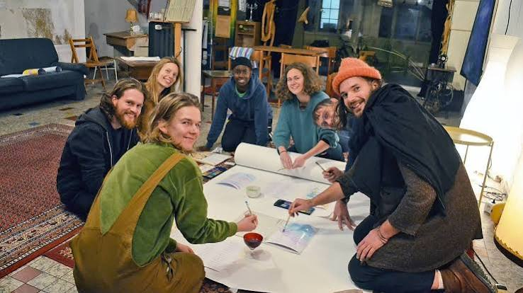
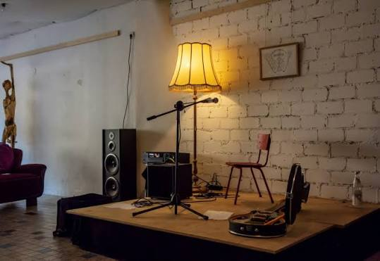
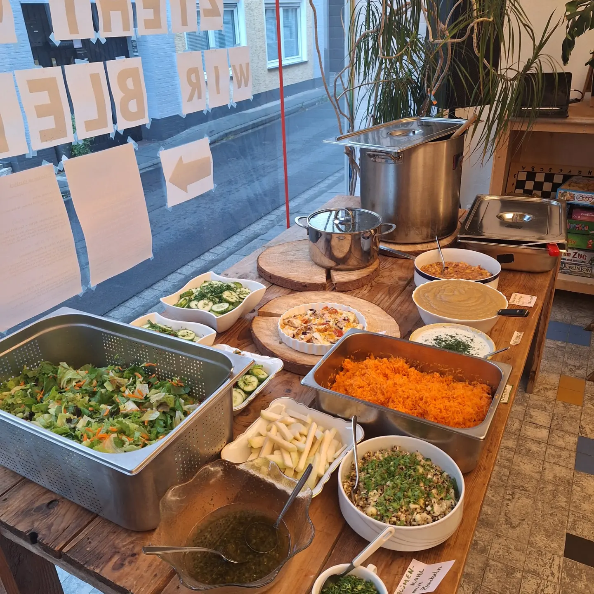

Was ist das Wohnzimmer?
Ein Raum für alle
Welche Räume braucht Kultur, die Verbundenheit schafft, und für alle zugänglich ist?
Das Wohnzimmer ist ein selbstorganisierter Kultur- und Begegnungsort, der die Nachbarschaft belebt und durch eine Gemeinschaft von aktiven Ehrenamtlichen getragen und geformt wird.
Hier finden Veranstaltungen unterschiedlicher Art statt: Kantine für alle, Konzerte, Workshops, Yoga, Repair-Cafés, Lesekreise, engagierte Initiativen, Ausstellungen, Kleidertauschpartys und vieles mehr.
Alle Veranstaltungen sind kostenlos zugänglich und basieren auf dem Prinzip der Tauschlogikfreiheit. Wir verlangen keinen festen Eintritt, sondern finanzieren uns über Spenden und Mitgliedsbeiträge.


Veranstaltung organisieren
Eine eigene Veranstaltung im Wohnzimmer organisieren
Das Wohnzimmer ist dafür gedacht, dass Du es nutzen kannst, ohne Raummiete zahlen zu müssen. Hier kann grundsätzlich jede Art von Veranstaltung stattfinden – ob einmalig, regelmäßig, öffentlich und auf Spendenbasis oder im geschlossenen Rahmen.
Der Raum steht mit Sofas, Kamin, Klavier, Küche, Beamer, Soundanlage, Tischen, Stühlen und leckeren Getränken für euch bereit. Alles beweglich und wandelbar.
Und die Menschen in Alfter sollen von deinem Angebot erfahren? Die Informationen zu deiner Veranstaltung können wir über unsere Werbekanäle und im Schaufenster ankündigen.
So geht's:
- Sende bitte eine E-Mail mit deiner Terminanfrage, deiner Veranstaltungsidee und deinen offenen Fragen an:
kulturkost@wohnzimmer-alfter.de - Gemeinsam mit dem E-Mail-Team lassen sich sowohl deine Fragen klären als auch ein Termin für deine Veranstaltung finden.
- Sobald wir den Termin gemeinsam bestätigt haben, tragen wir deine Veranstaltung in unseren internen Kalender ein. Der Raum ist dann für diesen Zeitraum für dich reserviert.
- Auf Wunsch bewerben wir deine Veranstaltung auch öffentlich. Dafür brauchen wir von dir eine kurze Beschreibung mit allen wichtigen Informationen und sehr gerne dazu auch ein Plakat.
- Vor der Veranstaltung geben wir dir eine Einführung in den Raum – und schon kann's losgehen!

Kickerturniere, Kleidertauschpartys, Filmabende, Werkeln, Saatgut-Börsen, Co-Working, Flohmärkte, Diskussionsrunden – alles ist möglich.
Mitglied werden
Werde Teil des Kollektivs
Durch eine Mitgliedschaft im Wohnzimmer.Kollektiv e. V. wirst du Teil des Kollektivs, das in Alfter selbstorganisierte Kulturkost für alle ermöglicht.
Dein Mitgliedsbeitrag beträgt mindestens 4 € im Monat.
Gemeinschaftlich können wir so sowohl Raummiete, Feuerholz, Konto-, Notar- und Versicherungsbeiträge, als auch unseren Hostingdienst oder kleinere Anschaffungen und Reparaturen tragen.
Mitgliedsantrag herunterladen (PDF)Neuigkeiten
Zukunftskonferenz des Wohnzimmer.Kollektiv e. V.
Bei der Zukunftskonferenz des Wohnzimmer.Kollektiv e. V. vom 11. bis 13. September 2026 wurden wichtige Impulse für die weitere Entwicklung des Projekts gesammelt. Im Mittelpunkt stand die Frage, wie die Verantwortung künftig auf mehrere Schultern verteilt und die gemeinsame Arbeit weiterentwickelt werden kann.
Eine mögliche Struktur ist die Gründung verschiedener Arbeitsgruppen (AGs), die sich jeweils mit unterschiedlichen Themenbereichen beschäftigen. Im Gespräch waren unter anderem:
- Kulturangebote
- Begegnungsbrunch
- Finanzen
- E-Mail-Kommunikation
- Öffentlichkeitsarbeit
- Raumpflege
- Kooperationen und Verbündete, etwa mit der Solidarischen Landwirtschaft oder dem Freiraum
- Mitgliedschaften
- Vorstandsstruktur und mögliche Vorstandsreform
Auch zum Thema Mitgliedschaften wurden erste Überlegungen angestellt. Neben der formalen Mitgliedschaft könnte beispielsweise eine Tagesmitgliedschaft ermöglicht werden. Dadurch könnten mehr Menschen an den Angeboten der Kantine teilnehmen und zugleich die rechtlichen Rahmenbedingungen berücksichtigt werden.
Die Kantine kann künftig als zentraler Treffpunkt und verbindendes Element der verschiedenen AGs dienen. Sie bietet Raum für informellen Austausch, die Weitergabe aktueller Informationen sowie die Sammlung und gemeinsame Besprechung neuer Themen und Ideen. Denkbar ist außerdem ein kurzer Informationsblock zu Beginn jeder Kantine, in dem die AGs vorgestellt und neue Mitglieder sowie Interessierte über ihre Arbeit informiert werden.
Als erste Schritte zur Weiterentwicklung der Kantine sind vorgesehen:
- Die rechtlichen Rahmenbedingungen und die praktische Umsetzung werden mit einer fachkundigen Person besprochen.
- Es wird ein Gespräch mit dem Bürgermeister geführt, der Unterstützung angeboten hat.
Weitere Ideen für Veranstaltungen sind unter anderem ein Großeltern-Enkel-Café und ein Kleidertausch.
Wer sich künftig wieder oder weiterhin im Wohnzimmer engagieren und Verantwortung übernehmen möchte, ist herzlich eingeladen, sich einzubringen. Gesucht werden Menschen für unterschiedliche Aufgaben und Themenbereiche – sowohl für kleine als auch für größere Verantwortungsbereiche.
Kontakt
Du möchtest vorbeikommen oder uns schreiben?
Wir würden uns sehr freuen, dich persönlich im Wohnzimmer willkommen zu heißen!
Wenn du eine Veranstaltung im Wohnzimmer organisieren möchtest, dann schreib uns gerne eine E‑Mail.
Schreib uns auch, wenn du das Wohnzimmer in einer der Arbeitsgemeinschaften mitgestalten oder durch deine Mitgliedschaft unterstützen möchtest.
Weitere Neuigkeiten findest du auf Instagram & Telegram.
Standort des Wohnzimmers
Hier findest du das Wohnzimmer auf der Karte (öffnet in neuem Tab)
Veranstaltung organisieren
Mitgliedschaft & Kontakt
Impressum
Wohnzimmer.Kollektiv e. V.
Knipsgasse 43
53347 Alfter
Vertretungsberechtigte Vorstandsmitglieder:
Elisa Gabelli
Carolin Jorinde Speicher
Lilith Wüller
Kontakt:
post@wohnzimmer-alfter.de
Vereinsregister:
Amtsgericht Bonn
Registernummer: VR 11505